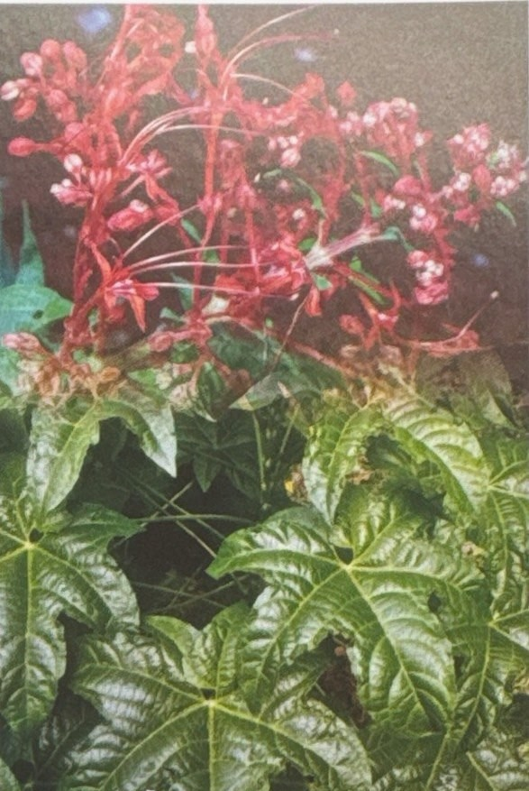

FRIM WEEKLY QUIZ
Week 01

Which of the following is a traditional use of Clerodendrum paniculatum L.?
Clerodendrum paniculatum L., also known as pokok pagoda, has been used in traditional medicine in several countries.
Week 01

Clerodendrum paniculatum L., also known as pokok pagoda, has been used in traditional medicine in several countries.